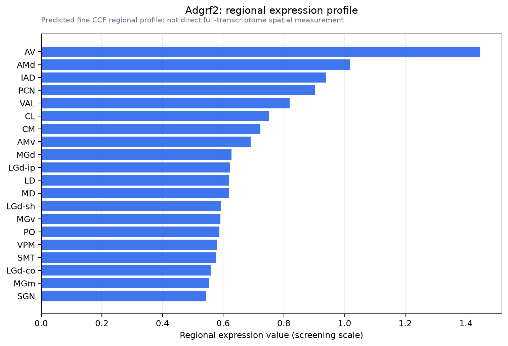

Adgrf2
Adhesion G protein-coupled receptor F2 (G protein-coupled receptor 111) (G protein-coupled receptor PGR20)
Spatial tier: RESTRICTED · Class: GPCR · Top region: AV (Anteroventral nucleus of thalamus) · Positive regions: 22/554
44.2Discovery Score
40.2Targetability Score
CEvidence grade C
What this means: Adgrf2: fine CCF profile is restricted toward AV (top regions: AV, AMd, IAD, PCN, VAL; 22 positive regions); direct spatial validation is still required.
Function in AV: evidence, prediction, innovation
- Gene function
- ADGRF2 (GPR111) is an orphan adhesion-class G-protein-coupled receptor. It carries the family's GAIN domain, which self-cleaves to expose a tethered Stachel agonist, but no extracellular ligand and no confirmed downstream G protein have been established. In mouse its documented expression is largely epithelial, in skin, stomach and lung.
- Region function
- The anteroventral thalamic nucleus is a Papez-circuit node receiving mammillothalamic and subicular input and projecting to retrosplenial and entorhinal cortex; it carries head-direction and theta signals and is required for spatial and episodic-like memory.
- Published in this region
- inferred No region-specific literature found. ADGRF2 appears only in broad adhesion-GPCR catalogues such as Hamann et al. 2015, with Human Protein Atlas reporting low to moderate brain signal; there is no published neuronal study of this receptor in any species, let alone in the anterior thalamus.
- Predicted function
- Prediction: by analogy with other adhesion GPCRs such as the latrophilins and BAI receptors, ADGRF2 in AV is most plausibly a synaptic or axon-guidance adhesion molecule acting at the mammillothalamic and subicular inputs that define this nucleus, possibly mechanically gated. Germline or AV-restricted deletion should leave gross thalamic cytoarchitecture intact but reduce mammillothalamic synapse density and degrade head-direction tuning stability and performance on spatial working-memory tasks such as T-maze alternation.
- Innovation
- ★★★★★ 5/5 A genuinely unstudied orphan receptor in a memory-critical thalamic nucleus, although the absence of any reagent beyond antibodies makes the first experiments harder.
- Tools
- none known - no validated Cre driver, ligand or neural-grade antibody; only commercial anti-ADGRF2/GPR111 antibodies and IMPC Adgrf2 knockout-first alleles. AV neurons are accessible with retrograde AAV from retrosplenial cortex.
- References
Direct evidence located at the region
No Allen ISH section could be located at this region's centroid for the recorded experiments.
Look it up yourself: Allen Mouse Brain ISH for Adgrf2Allen reference atlas: AV (structure 255)ABC Atlas MERFISH viewer(in the ABC Atlas choose dataset MERFISH-C57BL6J-638850-CCF, colour cells by gene "Adgrf2" or by parcellation_substructure "AV")All genes confined to AV + 3-D brain
Direct spatial evidence
MERFISH REGION LOCATOR

Regional expression figure

Predicted WMB × fine-CCF profile; not direct full-transcriptome spatial measurement.
Spatial profile
Evidence and specificity
- Evidence status
- PREDICTED_FINE
- Direct sources
- None; predicted localization only
- Exclusive threshold
- 12 positive regions out of 554
- Spatial specificity
- 0.355
- Top-region fraction
- 0.082
- Filter status
- PASS
Interpretation limits
- Cell-type-to-region projection is imputed expression, not direct spatial measurement.
- Adult reference atlases do not establish stability across age, sex, strain, state, or disease.
- Transcript abundance does not guarantee protein abundance or genetic-tool performance.